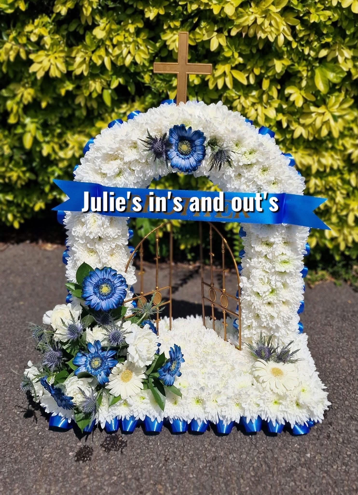

Julie's Ins and Outs
Flowers for all occasions
Fully established florist with over 15 years of experience. Renowned for thoughtful funeral tributes, stunning bouquets, and completely bespoke designs that no one else can create. Loved by hundreds — countless 5‑star reviews.
Based in Birmingham, covering all local areas. Every arrangement is handcrafted with fresh, premium blooms and finished with love and attention to detail.
